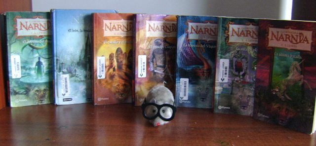
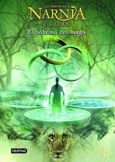
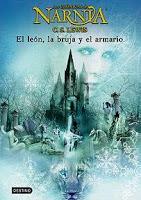
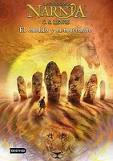
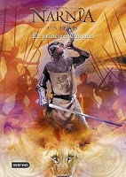
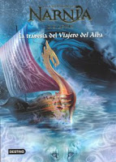
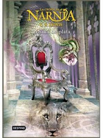
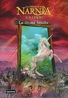

Lee y Diviértete con aslan
Lle3yi1tt@
¿Quiénes somos?
La mejor colección
MISIÓN.
Brindar a los niños y niñas de todas las edades una atención pedagógica congruente con las características propias de la edad y programa vigente, mediante oportunidades de aprendizaje en un ambiente distinto al familiar y contribuyendo al desarrollo de todas sus potencialidades; haciendo énfasis en las competencias cognitivas, socio-afectivas y de lenguaje de los niñas y las niñas que cursan este nivel educativo.
VISIÓN.
Ser una librería comprometida con la tarea de democratizar las oportunidades educativas, atendiendo y brindando especial influencia positiva a los niños y niñas en situación de riesgo y con necesidades educativas especiales, mediante el desarrollo de competencias intelectuales con capacidad de aprender permanentemente, así como en la formación de valores y actitudes que les permitan avanzar hacia el desarrollo de competencias para la vida.
VALORES.
Por lo que todos trabajamos muy fuerte para así los niños tengan un buen libro y tengan algo en lo cual entretenerse y no hacer cosas indebidas.

CRONICAS DE NARNIA
Producto
El Sobrino del Mago
 Editorial Planeta Destino. A partir de 11 años. 256 págs.
Digory, que más tarde será conocido como el célebre doctor Kirke, y Polly, su vecina, mediante unos anillos mágicos del tío de Diggory llegará a otros misteriosos mundos e inconscientemente llevarán de vuelta a Londres a una malvada bruja que intentará apoderarse del mundo. Y, además, asistirán a la creación de Narnia por el mágico león Aslan. Pero la malvada bruja Jadis, sedienta de poder, quiere apoderarse del mundo en el que se encuentra...
El león, la bruja y el armario
 Editorial Planeta, Destino. A partir de 11 años. 240 págs. Peter, Edmund, Susan y Lucy son evacuados en la Segunda Guerra Mundial a la casa del profesor Kirke. Lucy, explorando la casa descubre que a través de un armario puede llegar a Narnia. Más tarde Edmund descubre también como llegar a Narnia a través del armario y conoce a una misteriosa mujer, la Bruja Blanca que muy amablemente le ofrece unas delicias turcas y le invita a ir a su castillo. Y cuando en otra ocasión los cuatro van a Narnia, Edmund se escapa al palacio de la bruja y Peter, Susan y Lucy se tendrán que enfrentar a la Bruja.
El Caballo y el Muchacho
 Editorial Planeta, Destino. A partir de 11 años.280 págs.
Shasta vive casi como un esclavo trabajando para un pobre pescador de Calormen, el reino vecino de Narnia. Un día llega un tarkaan a la casa del pescador, Shasta les escucha a escondidas y descubre que el tarkaan le quiere comprar para llevárselo como esclavo. Descubre que el caballo del tarkaan es un animal parlante que intenta, como Shasta, escapar a Narnia. Juntos emprenderán un largo viaje hasta Narnia, la tierra donde todo puede suceder. Más tarde se encontrarán con otros fugitivos, la tarkina Arabís y su yegua parlante Hwin que también huyen a Narnia.
El Príncipe Caspian
 Editorial Planeta, Destino. A partir de 11 años. 281 págs.
Los telmarinos han invadido Narnia y el despiadado rey Miras controla el país mientras Caspian no sea mayor de edad. Los animales parlantes, centauros, los gigantes, los enanos y todas las criaturas mágicas de Narnia viven escondidas en los bosques. El príncipe Caspian, heredero al trono añora los viejos tiempos en Narnia y cuando Miras tiene un hijo se ve obligado a abandonar el castillo y huir a los bosques para encontrar a los viejos narnianos. Cuando se ve en peligro toca el cuerno de la reina Susan y Peter, Edmund, Susan y Lucy vuelven a Narnia para restaurar el orden en el país y poner a Caspian como rey.
La travesía del viajero del alba
 Edmund y Lucy están en casa de su detestable primo Eustace pensando que van a pasar las peores vacaciones de su vida cuando observando el cuadro de un barco en una tempestad vuelven a Narnia (Eustace también) a bordo del Viajero del Alba.
En el barco se encontrarán con Caspian y Reepicheep que intentan encontrar a los siete lores amigos del padre de Caspian que fueron exiliados de Narnia cuando el rey Miraz ocupó el trono. Además intentarán descubrir qué hay más allá de las Islas Solitarias, las últimas islas ocupadas por los narnianos.
Tiene algunos momentos un poco aburridos y puede parecer un poco repetitivo. Sorprendentes los últimos tres capítulos.
La Silla de Plata
 Editorial Planeta, Destino. A partir de 11 años. 304 págs.
Jill Pole y Eustace Scrubb llegarán a Narnia para cumplir la misión encomendada por Aslan: encontrar al hijo del ya envejecido rey Caspian. Para ello necesitarán visitar Harfang, la ciudad en ruinas de los gigantes y, siguiendo las instrucciones de Aslan, encontrarán al príncipe. Un habitante de las marismas, Charcosombrío, les ayudará a llegar a la ciudad de los gigantes. Al final, se encontrarán con los gigantes que les acogerán en su castillo. Después descubrirán los peligros de la Tierra Inferior, de su Reína y de sus habitantes los Terranos.
La Última Batalla
 Triquiñuela, un mono parlante, y Puzzle, un asno parlante también, viven al oeste del Erial del Farol en una zona casi desierta. Cuando encuentran una piel de un león muerto en el río, deciden que Puzzle se hará pasar por Aslan y así todos le obedecerán. Con la ayuda del falso Aslan, los calormenos cortan los árboles parlantes asesinando a las dríades. Triquiñuela impone sus leyes en toda Narnia y vende a los animales parlantes a los calormenos. El rey Tirian recibe la ayuda de Jill y Eustace, juntos intentarán devolver Narnia a la normalidad.
Un gran final para una gran colección.
CRONICAS DE NARNIA
Equipo
IRELIA RUIZ ARENAS
Tiene la edad de 16 años, su color favorito es el morado y le gusta jugar futbol, estudia actualmente en la preparatoria de CBTis 184.
REYNA ESMERALDA BRAVO REGALADO
Tiene la edad de 16 años, su color favorito es el morado y le gusta jugar futbol, su artista favorito es DEMI LOVATO. Estudia actualmente en la preparatoria de CBTis 184.
CRONICAS DE NARNIA